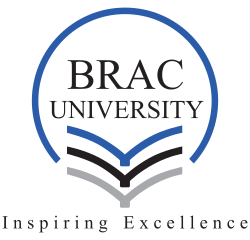
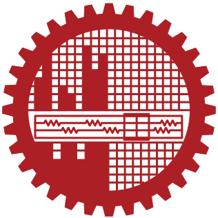
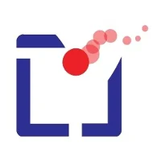
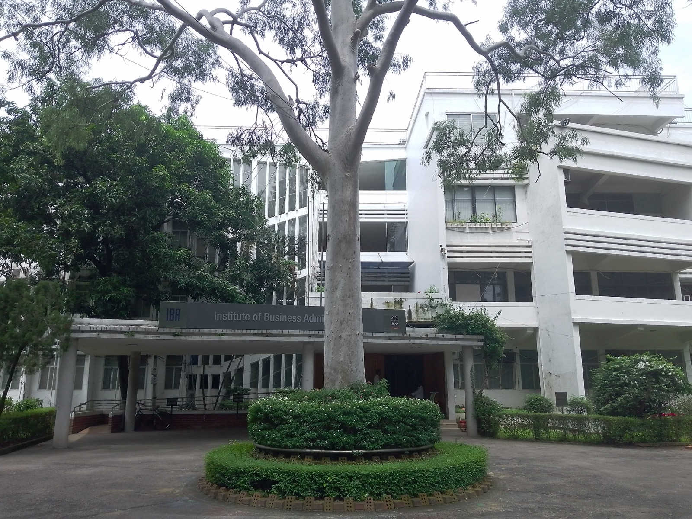

Azmain
Mahdi
Researcher in human-AI interaction
Applying to PhD programs for Fall 2027
AI Product Lead, Advanced AI Lab Limited
- Human-AI interaction
- Dark patterns and deceptive design
- Usable privacy and security
- Accessibility
- Generative AI in design
- Trust and reliance on AI
- Data visualization
- Interfaces for non-expert users

About
I’ve always cared about how things look and how they work. It started with digital art and design, then branding work for clients. Product work opened that up into bigger questions. Building products around accessibility and usability made me curious about how people interact with technology, and how much that shapes everyday life. That led me to HCI.
Now I study what happens when AI starts designing the interfaces people use every day. More and more of what we tap, click and consume is drafted by an artificial intelligence. I want to understand how that changes the choices people make, and what kind of relationship people actually want with the machines around them.
Outside work, I like to travel, make digital art and build small games and web apps trying to make people's lives just a bit more convenient in my own way. Some hobbies
Research
All researchDark patterns in AI-generated interfaces
Freelancers now hand clients interfaces that an AI tool drafted. This study asks how they spot the manipulative parts, and what they change or send anyway.

Dr. S. M. Taiabul Haque
Dr. Novia Nurain
UX-centred product management at BeeBooks
A case study of an accounting product built for small-business owners who are not accountants.
- Mushtaque Ahmed
What Bangladeshi viewers want from Chorki
Audience research for a Bangladeshi streaming platform, presented to the Chorki team.
- Dr. Md Ridhwanul Haq
- Prothom Alo
Projects
All projectsWork
All work
Product ManagerPridesys IT Ltd.I directed UI/UX for a government platform for farmers, and drove an AI bookkeeping platform for SME owners with no accounting training.Sep 2025 to May 2026 Digital Strategy and Product DesignerVera Ink BDI manage digital strategy and visual-identity projects for clients including Prime Bank, Tearfund and JCI.Jan 2023 to presentInstitute of Business Administration
University of Dhaka
Bachelor of Business Administration · 2021 to 2026
- Major
- Finance
- Minor
- Marketing

Photo: IBA building, DU by Yahya, CC BY-SA 4.0.

Methods
- Task-based interviews
- Stimulus design
- Field observation
- Usability testing
- Reflexive thematic analysis
- Survey validation
- Ordinal logistic regression
- Audience segmentation
 Figma
Figma- Illustrator
- Photoshop
 Python
Python- JavaScript
- SPSS
- Excel
- Power BI
- KNIME